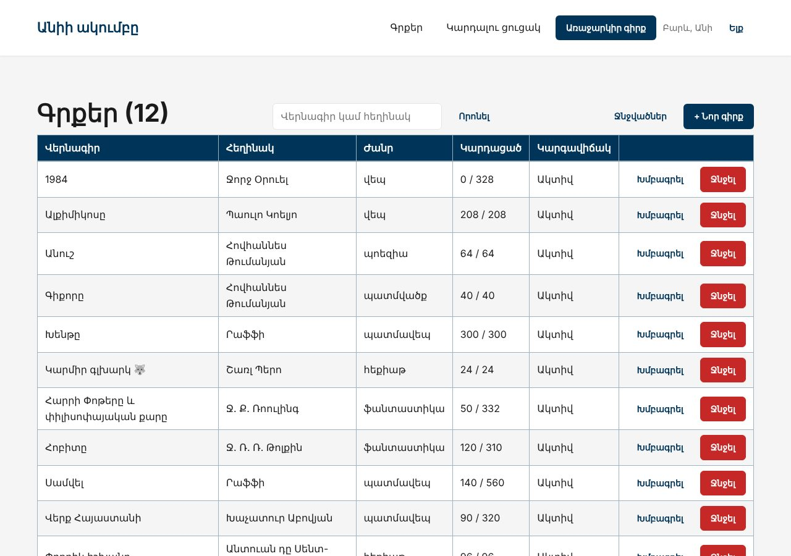
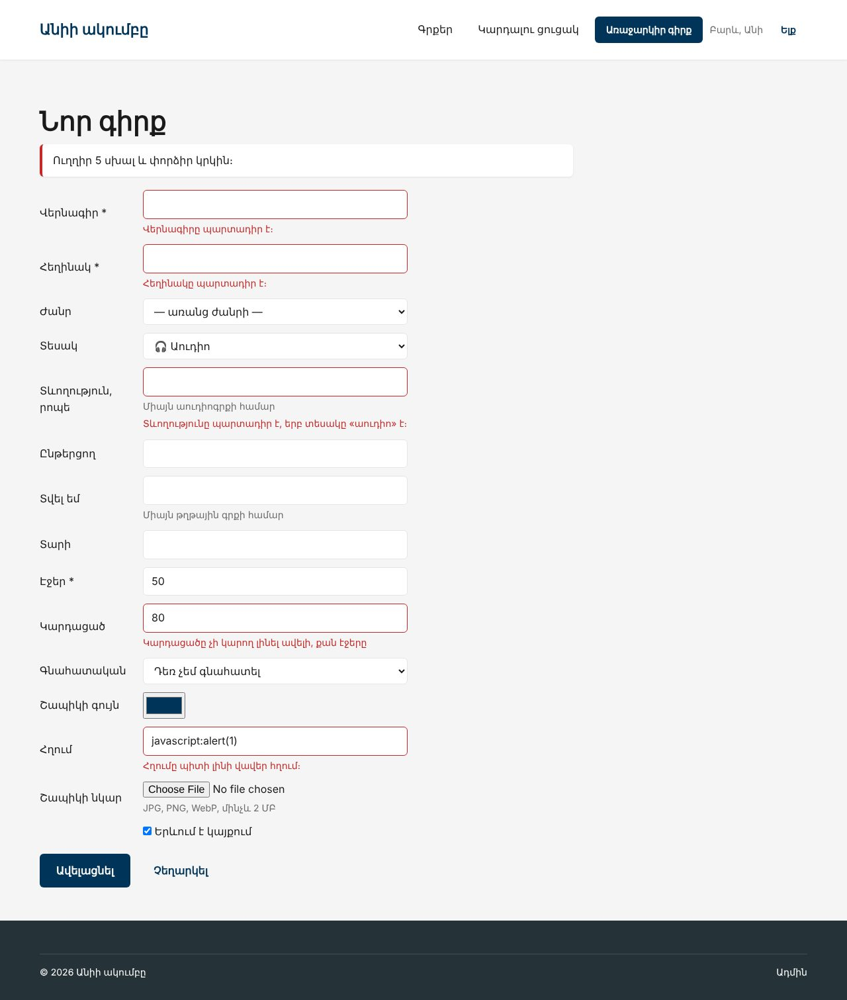

Տնային աշխատանք · PHP Դաս 21 · մինի-նախագիծ
Ադմինի ֆորման ստանում է BookRequest՝ հայերեն սխալներով, old()-ով և շապիկի վերբեռնումով։ Մուտքը և գրանցումը՝ Fortify, ադմինը՝ auth և can:manage-books, ջնջելը՝ միայն Անին։ Դաս 06-ի «Առաջարկիր գիրք»-ը վերաշարադրվում է Form Request-ով։
Դաս 01–21․ $request->validate(), Form Request (authorize, rules, attributes, prepareForValidation), Rule::exists, Rule::in, old(), @error, lang/hy, Fortify, RateLimiter, Gate-եր, @can, Gate::authorize, store('covers', 'public'), DB::transaction։


Laravel-ը ինքը չի մտնում օրինակի մեջ (vendor-ը 70+ ՄԲ է)․ example/-ում են միայն այն ֆայլերը, որ դու ստեղծում կամ փոխում ես նոր նախագծում։ Պատճենիր դրանք նույն ուղիներով։
Այս ֆայլերը պատճենվել են մաքուր Laravel 12 նախագծի վրա (Fortify-ով, MariaDB-ով), կատարվել են migrate:fresh --seed և view:cache, և կայքը ստուգվել է բրաուզերում ավտոմատ թեստերով (Դաս 22-ի վերջնական վիճակը՝ 50 ստուգում՝ ֆիլտրեր, ցուցակ, ադմին, վալիդացիա, դերեր, 403/404/419, API, գնահատական)։ Նկարները վերցված են հենց այդ գործարկումից։ Քո մեքենայում միևնույն է անցիր ստուգաթերթով (բաժին 03)։
Շարունակիր Laravel նախագիծը։ Եթե բաց ես թողել նախորդ դասը, սկսիր Դաս 20-ի օրինակից՝ պատճենելով ֆայլերը նոր Laravel նախագծի վրա։
starter/SETUP.md — այս դասի հրամաններըstarter/config/fortify-changes.md — ինչ փոխել config/fortify.php-ումstarter/lang/hy/pagination.php — օրինակ թարգմանության համար| Գործարկել |
|---|
php artisan migrate:fresh --seed && php artisan serve |
php artisan lang:publish, lang/hy/validation.php՝ AI-ի օգնությամբ, :attribute-ը և :max-ը անփոփոխ (տնային 3)lang/hy/auth.php՝ «failed»-ը նույնն է սխալ գաղտնաբառի և անհայտ հասցեի համար (տնային 4)APP_LOCALE=hyauthorize()՝ can('manage-books')genre_id՝ Rule::exists, read_pages՝ lte:pages, link՝ url:http,httpscover՝ image, mimes:jpg,jpeg,png,webp, max:2048 (տնային 5)public function rules(): array
{
return [
'title' => ['required', 'string', 'max:200'],
'author' => ['required', 'string', 'max:100'],
'genre_id' => ['nullable', 'integer', Rule::exists('genres', 'id')], // curl-ով genre_id=99999 → սխալ
'year' => ['nullable', 'integer', 'min:1', 'max:' . date('Y')],
'pages' => ['required', 'integer', 'min:1', 'max:5000'],
'read_pages' => ['required', 'integer', 'min:0', 'lte:pages'], // Դաս 04-ի «120%»-ը
'rating' => ['required', 'integer', 'between:0,5'],
'color' => ['required', 'regex:/^#[0-9a-fA-F]{6}$/'],
'link' => ['nullable', 'url:http,https', 'max:255'], // javascript:-ը՝ ոչ
'format' => ['required', Rule::in(['paper', 'audio', 'ebook'])],
'minutes' => ['nullable', 'required_if:format,audio', 'integer', 'min:1', 'max:6000'],
'narrator' => ['nullable', 'string', 'max:100'],
'lent_to' => ['nullable', 'string', 'max:60'],
'cover' => ['nullable', 'image', 'mimes:jpg,jpeg,png,webp', 'max:2048'], // տնային 5
'is_active' => ['boolean'],
];
}$request->safe()->except([...]), uniqueSlugFor()$request->file('cover')->store('covers', 'public'), php artisan storage:linkisDirty()՝ «Ոչինչ չփոխվեց»old(), @error, aria-invalid@props(['name', 'label', 'type' => 'text', 'value' => null, 'required' => false, 'hint' => null])
<label for="{{ $name }}">{{ $label }}@if ($required) *@endif</label>
<div @class(['field', 'has-error' => $errors->has($name)])>
<input id="{{ $name }}" name="{{ $name }}" type="{{ $type }}" value="{{ old($name, $value) }}"
{{ $attributes }}
@error($name) aria-invalid="true" aria-describedby="{{ $name }}-error" @enderror>
@if ($hint)
<small class="meta">{{ $hint }}</small>
@endif
@error($name)
<small class="field__error" id="{{ $name }}-error">{{ $message }}</small>
@enderror
</div>composer require laravel/fortify, fortify:installauth/login և auth/register՝ Դաս 16-ի ֆորմաները Blade-ովLoginResponse՝ admin/editor → ադմին, member → գլխավորCreateNewUser՝ role-ը չի վերցվումmanage-books՝ admin և editor, delete-books՝ միայն adminmiddleware(['auth', 'can:manage-books'])destroy-ում՝ Gate::authorize('delete-books'), կոճակը՝ @can-ովBookPolicy (տնային 7)Route::middleware(['auth', 'can:manage-books'])
->prefix('admin')
->name('admin.')
->group(function () {
Route::get('/', fn () => redirect()->route('admin.books.index'));
Route::get('books/trashed', [AdminBookController::class, 'trashed'])->name('books.trashed');
Route::patch('books/{book}/restore', [AdminBookController::class, 'restore'])->withTrashed()->name('books.restore');
Route::resource('books', AdminBookController::class)->except(['show']);
// Դաս 16-ի /admin/book/{slug}/read-ը
Route::post('books/{book}/read', [ReadingController::class, 'store'])->name('books.read');
});SuggestRequest՝ Դաս 06-ի ֆորման, համեմատիր տողերի քանակը (տնային 2)ListController@store՝ validate(), list.js-ը կարդում է payload.errors-ը (տնային 6)ReadingRequest և DB::transactionrating=9՝ երկու հայերեն սխալ, մյուս դաշտերը լրացված ենgenre_id=99999 curl-ով՝ սխալ, ոչ 500/admin/books/1/edit → մուտք → հենց այդ էջը| Սխալ | Ինչպես ուղղել |
|---|---|
This action is unauthorized ադմինի ֆորմայում | BookRequest::authorize()-ը false է․ մուտք գործած չես կամ դերը member է |
| Սխալները անգլերեն են | APP_LOCALE=hy և lang/hy/validation.php, ապա php artisan config:clear |
| Սխալում «վերնագիրը-ը» կամ «վերնագիրը դաշտը» | Անունները attributes()-ում արդեն հոդով են․ թարգմանության մեջ գրիր :Attribute պարտադիր է։՝ առանց -ը-ի և «դաշտը»-ի։ :Attribute-ը առաջին տառը դարձնում է մեծատառ |
| Շապիկը 404 | php artisan storage:link չես արել |
| Մուտքից հետո member-ը ստանում է 403 | fortify.home-ը /admin/books է․ պետք է LoginResponse |
Սրանք Դաս 21-ի տնային աշխատանքի կետերն են։ «մինի-նախագծում» նշվածները արդեն կատարել ես վերևի քայլերում՝ Անիի ակումբում։ Մնացածը կատարիր ՏեխնոՄարկետում, ինչպես գրված է դասում։
old()-ով և @error-ով։ Համեմատիր տողերի քանակը։ մինի-նախագծումlang/hy/validation.php-ը AI-ի օգնությամբ և ստուգիր, որ բոլոր տեղապահները (:attribute, :max…) անփոփոխ են։ մինի-նախագծումlang/hy/auth.php-ը։ Ստուգիր, որ սխալ գաղտնաբառի և անգոյ հասցեի հաղորդագրությունները նույնն են (Դաս 16)։ մինի-նախագծում'image' => ['nullable', 'image', 'mimes:jpg,png,webp', 'max:2048'], $request->file('image')->store('products', 'public'), php artisan storage:link։ Համեմատիր Դաս 7-ի վեց քայլի հետ։ մինի-նախագծումCartController-ի abort_if(..., 422)-ը $request->validate()-ով և տպիր payload.errors-ը cart.js-ում։ մինի-նախագծումProductPolicy (php artisan make:policy ProductPolicy --model=Product) և տեղափոխիր երկու Gate-երը նրա մեջ։ Ի՞նչ փոխվեց կոնտրոլերում։ մինի-նախագծումԵրբ բաժին 03-ի բոլոր կետերը նշված են, բացիր օրինակը։ Գտիր մեկ բան, որ դու արել ես այլ կերպ, և մտածիր՝ որն է ավելի հասկանալի և ինչու։ Քո լուծումը կարող է տարբերվել և լինել ճիշտ։